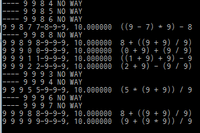
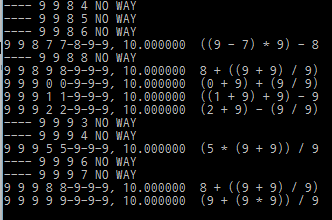

차량 번호판으로 10을 만들자
3/30/2016
퇴근 길 지하철을 기다리면서 들어간 유머 사이트에서 "과게 레전드" 란 단어를 보고 전설의 레전드라니 읽지 않을 수 없었다.
데이터]스압]다시보는 과게 레전드.jpgs
대충 훑어보니 차 번호판의 숫자 4개를 사칙연산으로 조합하여 10을 만들 방법이 있는가 였다.
생각해보니 어렸을 때 비슷한 짓을 한 것도 같아 옛 생각도 나고 한 번 생각해 보기로 했다.
데이터]스압]다시보는 과게 레전드.jpgs
대충 훑어보니 차 번호판의 숫자 4개를 사칙연산으로 조합하여 10을 만들 방법이 있는가 였다.
생각해보니 어렸을 때 비슷한 짓을 한 것도 같아 옛 생각도 나고 한 번 생각해 보기로 했다.
처음엔 "사칙연산 조합으로 10이 되지 않는 4개의 수가 존재한다고 하자" 라고 쓰고는 한 십분 고민하다가 포기가 빠른 남자답게 뭘 이렇게 해, 한 자리 숫자 4개를 사칙연산 3개로 접합시키는 거야 \( _{10}\Pi_{4} \cdot _{4}\Pi_{3} \) 이니까 그냥 돌리면 되겠네 로 결정했다. 그러면서 명경지수의 마음으로 평화롭게 코드를 만들다가 또! 갑자기 사칙연산에는 우선순위가 있잖아 란 것이 생각났다.
원 계획은 수식 a x b y c z d 의 크기가 7인 배열을 만든 다음, a, b, c, d 에는 0부터 9 까지의 숫자를, x, y, z 에는 +, -, x, / 의 사칙연산을 뺑뺑이 돌면서 집어 넣은 후 모든 경우에 대해 앞에서부터 계산한 후 10이 나오는지 여부를 체크하려고 했다. 이렇게 되면 연산자 우선 순위가 무시되어 제대로 된 결과가 나오지 않게 된다. 예를 들면 1 + 2 x 3 - 4 를 앞에서 부터 즉 1 + 2 를 먼저 계산하면 안 되고 2 x 3 을 계산한 후 1 을 더해야 하기 때문이다. 사실은 a, b, c, d 가 순서를 모두 섞으므로 그렇게 하지 않아도 결과에는 영향을 미치지 않지만.
바로 그 순간, 그래 괄호를 빼먹었구나, 그러면 괄호를 포함한 연산식 나열 -> 개별 연산 식에 대해 괄호 제거 -> 중위 연산자를 후위 연산자로 -> 귀찮다
의 순으로 사고가 흘러가다가 그냥 그만 둘까로 반 쯤 마음이 돌아선 그때 연산자 3개면 괄호 넣는 방법도 \( 3! \) 즉 6개 밖엔 없잖아, 나열하자 라고 결정했다.
원 계획은 수식 a x b y c z d 의 크기가 7인 배열을 만든 다음, a, b, c, d 에는 0부터 9 까지의 숫자를, x, y, z 에는 +, -, x, / 의 사칙연산을 뺑뺑이 돌면서 집어 넣은 후 모든 경우에 대해 앞에서부터 계산한 후 10이 나오는지 여부를 체크하려고 했다. 이렇게 되면 연산자 우선 순위가 무시되어 제대로 된 결과가 나오지 않게 된다. 예를 들면 1 + 2 x 3 - 4 를 앞에서 부터 즉 1 + 2 를 먼저 계산하면 안 되고 2 x 3 을 계산한 후 1 을 더해야 하기 때문이다. 사실은 a, b, c, d 가 순서를 모두 섞으므로 그렇게 하지 않아도 결과에는 영향을 미치지 않지만.
바로 그 순간, 그래 괄호를 빼먹었구나, 그러면 괄호를 포함한 연산식 나열 -> 개별 연산 식에 대해 괄호 제거 -> 중위 연산자를 후위 연산자로 -> 귀찮다
의 순으로 사고가 흘러가다가 그냥 그만 둘까로 반 쯤 마음이 돌아선 그때 연산자 3개면 괄호 넣는 방법도 \( 3! \) 즉 6개 밖엔 없잖아, 나열하자 라고 결정했다.
이러쿵 저러쿵 말은 많지만 그래서 만든 코드는
ten.pl
이고 돌려 보니 10이 되지 않는 결과가 와장창 나와서

뭐 틀렸구만 이라고 생각하고 그제서야 너희들이 틀린 거야 라고 말하고 싶어서 그 글의 내용을 읽기 시작했다.
확인해 보니 그 글에서는 일단 0도 포함하지 않고 중복도 허용하지 않는 조건으로 문제를 푼 것이고 그러한 조건을 추가해 넣고 보니 정말 4개의 숫자를 가지고 사칙연산을 하면 10을 모두 만들 수 있었다.
ten.pl
이고 돌려 보니 10이 되지 않는 결과가 와장창 나와서

뭐 틀렸구만 이라고 생각하고 그제서야 너희들이 틀린 거야 라고 말하고 싶어서 그 글의 내용을 읽기 시작했다.
확인해 보니 그 글에서는 일단 0도 포함하지 않고 중복도 허용하지 않는 조건으로 문제를 푼 것이고 그러한 조건을 추가해 넣고 보니 정말 4개의 숫자를 가지고 사칙연산을 하면 10을 모두 만들 수 있었다.
또한 그 글에서는 또 숫자 갯수가 4개인 경우가 증명되었으므로 5 이상인 경우에는 자동적으로 성립한다는 것을 8개에서 5개의 숫자를 선택하면 연속한 숫자가 반드시 존재한다 는 것을 사용했는데
유머 사이트 게시글에서 전혀 기대하지 않은 것이 툭 튀어 나오니 급 정신이 혼미해지면서 다시금 사람이 가져야 하는 덕목 중에 제일은 겸손이며 항상 어디에서든 나 보다 잘난 놈을 조심해야 한다는 것을 마음 깊이 새긴다.
오오 비둘기집 원리를 사용하다니!
유머 사이트 게시글에서 전혀 기대하지 않은 것이 툭 튀어 나오니 급 정신이 혼미해지면서 다시금 사람이 가져야 하는 덕목 중에 제일은 겸손이며 항상 어디에서든 나 보다 잘난 놈을 조심해야 한다는 것을 마음 깊이 새긴다.